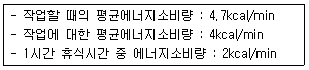
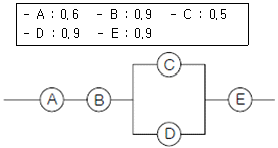
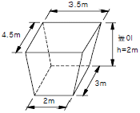
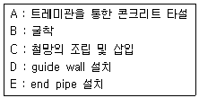
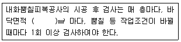

건설안전산업기사 (2009-05-10 기출문제)
1과목: 산업안전관리론
1. 다음 그림에 해당하는 산업안전보건법상 안전ㆍ보건표지의 종류로 옳은 것은?
- 부식성물질경고
- 산화성물질경고
- 인화성물질경고
- 폭발성물질경고
(정답률: 82%)

2. 다음 중 자율안전확인대상 보안경의 사용구분에 따른 종류에 해당하지 않는 것은?
- 유리보안경
- 자외선용보안경
- 플라스틱보안경
- 도수렌즈보안경
(정답률: 49%)
3. 다음 중 라인-스탭(line-staff) 조직의 단점으로 볼 수 없는 것은?
- 권한의 분쟁이나 조정으로 인해 시간과 노력이 소모 될 수 있다.
- 명령계통과 조언ㆍ권고적 참여가 혼동되기 쉽다.
- 스탭의 월권행위가 발생하는 경우가 있다.
- 라인이 스탭에 의존 또는 활용하지 않는 경우가 있다.
(정답률: 40%)
4. 다음 중 재해의 원인과 결과를 연계하여 상호 관계를 파악하기 위하여 도표화하는 분석방법은?
- 파레토도
- 특성요인도
- 크로스분류도
- 관리도
(정답률: 69%)
5. 국제노동기구(ILO)의 분류에 부상결과 신체장해등급 제4급~제14급에 해당한 상해로 옳은 것은?
- 영구 전노동 불능상해
- 일시 전노동 불능상해
- 영구 일부노동 불능상해
- 일시 일부노동 불능상해
(정답률: 40%)
6. 다음 중 기억과 망각에 관한 내용으로 틀린 것은?
- 학습된 내용은 학습 직후의 망각률이 가장 낮다.
- 의미없는 내용은 의미있는 내용보다 빨리 망각한다.
- 사고력을 요하는 내용이 단순한 지식보다 기억, 파지의 효과가 높다.
- 연습은 학습한 직후에 시키는 것이 효과가 있다.
(정답률: 53%)
7. 다음 중 무재해 운동의 이념 3원칙에 해당하지 않는 것은?
- 무의원칙
- 자주활동의 원칙
- 참가의 원칙
- 선취 해결의 원칙
(정답률: 60%)
8. 다음 중 안전관리에 있어 관리사이클(PDCA)에 해당 하지 않는 것은?
- 계획(Plan)
- 실시(Do)
- 검토(Check)
- 분석(Analysis)
(정답률: 69%)
9. 평균 근로자수가 50명인 A 공장에서 지난 한 해동안 3명의 재해자가 발생하였다. 이 공장의 강도율이 1.5이었다면 총근로손실일수는 며칠인가? (단, 근로자는 1일 8시간씩 300일을 근무하였다.)
- 180
- 190
- 208
- 219
(정답률: 53%)
10. 안전한 작업방법을 알고는 있으나 시행하지 않는 것에 대한 교육으로 옳은 것은?
- 안전지식 교육
- 작업환경 교육
- 안전태도 교육
- 안전기능 교육
(정답률: 73%)
11. 다음과 같은 [조건]의 작업에 있어 1시간의 총작업시간 내에 포함시켜야 하는 휴식시간은 약 얼마인가?

- 7.23분
- 10.11분
- 13.13분
- 15.56분
(정답률: 23%)
12. 다음 중 교육의 3대 요소가 아닌 것은?
- 평가
- 강사
- 피교육자
- 교육자료
(정답률: 63%)
13. 산업안전보건법상 사업내 안전ㆍ보건교육 중 근로자 정기 안전ㆍ보건교육의 내용이 아닌 것은?
- 유해ㆍ위험 작업환경 관리에 관한 사항
- 건강증진 및 질병 예방에 관한 사항
- 산업안전 및 사고 예방에 관한 사항
- 기계ㆍ기구 또는 설비의 안전ㆍ보건점검에 관한 사항
(정답률: 42%)
14. 단조로운 업무가 장시간 지속될 때 작업자의 감각기능 및 판단능력이 둔화 또는 마비되는 경우의 의식수준은?
- phase 0
- phase I
- phase II
- phase III
(정답률: 52%)
15. 다음 중 적응기제(Adujustment Mechanism)의 유형에서 "동일화(identification)"의 사례에 해당하는 것은?
- 운동시합에 진 선수가 컨디션이 좋지 않았다고 한다.
- 결혼에 실패한 사람이 고아들에게 정열을 쏟고 있다.
- 아버지의 성공을 자랑하며 자신의 목에 힘이 들어가 있다.
- 동생이 태어난 후 초등학교에 입학한 큰 아이가 손가락을 빨기 시작한다.
(정답률: 43%)
16. 다음 중 Off.J.T(Off the Job Training)의 특징이 아닌것은?
- 전문가를 초빙하여 강사로 활용이 가능하다.
- 교육생 간에 많은 지식과 경험을 교류할 수 있다.
- 다수의 교육생에게 조직적 훈련이 가능하다.
- 직장의 실정에 맞는 실질적 훈련이 가능하다.
(정답률: 62%)
17. 산업안전보건법에 따라 안전관리자를 정수 이상으로 증원하거나 교체하여 임명할 것을 명할 수 있는 경우가 아닌 것은?
- 해당 사업장의 연간재해율이 동일업종 평균재해율의 3배인 경우
- 작업환경불량, 화재, 폭발 또는 누출사고 등으로 사회적 물의를 일으킨 경우
- 중대재해가 연간 3건 발생한 경우
- 안전관리자가 질병의 이유로 6개월 동안 직무를 수행할 수 없게 된 경우
(정답률: 36%)
18. 다음 중 교육방법의 4단계를 올바르게 나열한 것은?
- 제시 → 도입 → 적용 → 확인
- 확인 → 도입 → 제시 → 적용
- 도입 → 확인 → 적용 → 제시
- 도입 → 제시 → 적용 → 확인
(정답률: 52%)
19. 인간의 행동에 대한 레윈(K.Lewin)의 식 B = f( PㆍE ) 에서 '인간관계' 요인을 나타내는 변수에 해당하는 것은?
- B(Behavior)
- f(function)
- P(Person)
- E(Environment)
(정답률: 46%)
20. 다음 중 위험예지훈련 기초 4라운드법의 진행에서 '위험의 포인트' 를 결정하여 전원이 지적확인을 하는 단계로 가장 적절한 것은?
- 제1라운드 : 현상파악
- 제2라운드 : 본질추구
- 제3라운드 : 대책수립
- 제4라운드 : 목표설정
(정답률: 55%)
2과목: 인간공학 및 시스템안전공학
21. 다음 중 FT도에서 컷셋(cut set) 에 대한 설명으로 틀린 것은?
- 시스템의 약점을 표현한 것이다.
- 정상사상(Top event)을 발생시키는 조합이다.
- 시스템이 고장나지 않도록 하는 사상의 조합이다.
- 일반적으로 Fussell Algorithm을 이용한다.
(정답률: 47%)
22. 다음 중 조도에 관한 설명으로 틀린 것은?
- 어떤 물체나 표면에 도달하는 광의 밀도를 말한다.
- 1[fc]란 1촉광의 점광원으로부터 1foot 떨어진 곡면에 비추는 광의 밀도를 말한다.
- 1[lux]란 1촉광의 점광원으로부터 1m 떨어진 곡면에 비추는 광의 밀도를 말한다.
- 조도는 거리에 비례하고, 광도에 반비례한다.
(정답률: 52%)
23. FT(Fault Tree)도를 작성할 때 일반적으로 최하단에 사용 되지 않는 사상은?
- 결함사상
- 통상사상
- 기본사상
- 생략사상
(정답률: 38%)
24. 평균고장시간(MTTF)이 6×1⑤ 시간인 요소 2개가 직렬계를 이루었을 때의 계(system)의 수명은?
- 2×105시간
- 3×105시간
- 9×105시간
- 18×105시간
(정답률: 46%)
25. 다음 중 누적손실장애(CTDS)의 원인으로 거리가 먼 것은?
- 진동공구의 사용
- 과도한 힘의 사용
- 높은 장소에서의 작업
- 부적절한 자세에서의 작업
(정답률: 69%)
26. 일반적인 인간-기계 시스템의 형태 중 인간이 사용자나 동력원으로 기능하는 것은?
- 기계화체계
- 수동체계
- 자동체계
- 반자동체계
(정답률: 69%)
27. 어떤 전자기기의 수명은 지수분포를 따르며, 그 평균 수명이 1000시간이라고 할 때 500시간동안 고장없이 작동할 확률은 약 얼마인가?
- 0.1353
- 0.3935
- 0.6065
- 0.8647
(정답률: 50%)
28. 일반적으로 연구조사에 사용되는 기준 중 기준척도의 신뢰성이 의미하는 것으로 옳은 것은?
- 보편성
- 적절성
- 반복성
- 객관성
(정답률: 43%)
29. 다음 중 실효온도(ET)의 결정요소가 아닌 것은?
- 복사
- 온도
- 습도
- 대류
(정답률: 34%)
30. 정보입력에 사용되는 표시장치 중 청각장치보다 시각장치를 사용하는 것이 더 유리한 경우는?
- 정보의 내용이 긴 경우
- 수신자가 직무상 자주 이동하는 경우
- 정보의 내용이 즉각적인 행동을 요하는 경우
- 정보를 나중에 다시 확인하지 않아도 되는 경우
(정답률: 57%)
31. 시스템 안전해석 방법 중 고장이 직접 시스템의 손실과 인명의 사상에 연결되는 높은 위험도를 가진 요소나 고장의 형태에 따른 분석법은?
- CA
- ETA
- PHA
- FMEA
(정답률: 30%)
32. 단일 차원의 시각적 암호 중 구성암호, 영문자암호, 숫자암호에 대하여 암호로서의 성능이 가장 좋은 것부터 배열한 것은?
- 숫자암호 - 영문자암호 - 구성암호
- 영문자암호 - 숫자암호 - 구성암호
- 영문자암호 - 구성암호 - 숫자암호
- 구성암호 - 숫자암호 - 영문자암호
(정답률: 56%)
33. 고장형태 및 영향분석(FMEA : Failure Mode and Effect Analysis)에서 평가요소에 해당되지 않는 것은?
- C1 : 기능적 고장 영향의 중요도
- C2 : 영향을 미치는 시스템의 범위
- C3 : 고장발생의 빈도
- C4 : 고장의 영향 크기
(정답률: 43%)
34. 다음 중 암호체계 사용상의 일반적인 지침에 해당하지않는 것은?
- 암호의 검출성
- 부호의 양립성
- 암호의 표준화
- 암호의 단일 차원화
(정답률: 58%)
35. 다음 중 부품배치의 원칙에 해당되지 않는 것은?
- 중요성의 원칙
- 사용빈도의 원칙
- 다각능률의 원칙
- 기능별 배치원칙
(정답률: 66%)
36. 다음 중 불대수의 관계식으로 옳은 것은?
- A(AㆍB) = B
- A + B = AㆍB
- A + AㆍB = AㆍB
- (A + B)(A + C) = A + BㆍC
(정답률: 47%)
37. [그림]과 같은 시스템에서 각 부품의 신뢰도가 다음과 같을 때 전체 시스템의 신뢰도는 약 얼마인가?

- 0.4104
- 0.4617
- 0.6314
- 0.6804
(정답률: 43%)
38. 다음 중 통제표시비를 설계할 때 고려해야할 5가지 요소가 아닌 것은?
- 조작시간
- 공차
- 목측거리
- 일치성
(정답률: 60%)
39. 화학설비에 대한 안전성 평가 5단계 중 '정성적평가'의 실시 단계는?
- 제1단계
- 제2단계
- 제3단계
- 제4단계
(정답률: 55%)
40. 신체 부위의 운동 중 몸의 중심선으로 이동하는 운동을 무엇이라 하는가?
- 굴곡운동
- 내전운동
- 신전운동
- 외전운동
(정답률: 52%)
3과목: 건설시공학
41. 다음 중 거푸집공사의 발전방향으로 옳지 않은 것은?
- 소형 패널 위주의 거푸집 제작
- 설치의 단순화를 위한 유닛(unit)화
- 높은 전용 횟수
- 부재의 경량화
(정답률: 66%)
42. 주문받는 건설업자가 대상계획의 기업 금융, 토지조달 설계, 시공, 기계기구설치, 시운전 및 조업지도까지 주문자가 필요로 하는 모든 것을 조달하여 주문자에게 인도하는 도급계약 방식은?
- 정액도급
- 분할도급
- 실비청산 보수가산도급
- 턴키도급
(정답률: 73%)
43. 다음 중 공동도급에 대한 설명으로 옳지 않은 것은?
- 각 회사의 소요자금이 경감되므로 소자본으로 대규모 공사를 수급할 수 있다.
- 각 회사가 위험을 분산하여 부담하게 된다.
- 상호기술의 확충을 통해 기술축적의 기회를 얻을 수 있다.
- 대기업에 유리하며 중소기업체에는 특히 불리하다.
(정답률: 65%)
44. 프리팩트파일의 일종으로 지중에 스크류 오거를 삽입하여 소정의 깊이까지 굴착한 후 흙과 오거를 뽑아 올리면서 오거 중심부에 있는 선단을 통하여 모르타르를 주입하여 말뚝을 형성하는 공법은?
- PIP
- MIP
- CIP
- OWS
(정답률: 45%)
45. 발포제의 한 종류로 시멘트와의 화학반응에 의해 특수한 가스를 발생시켜 기포를 도입하는 혼화제는?
- 알루미늄 분말
- 포졸란
- 플라이애쉬
- 실리카흄
(정답률: 27%)
46. 건설공사 시공방식 중 직영공사의 장점에 속하지 않는 것은?
- 영리를 도외시한 확실성 있는 공사를 할 수 있다.
- 임기응변의 처리가 가능하다.
- 공사기일이 단축된다.
- 발주, 계약 등의 수속이 절감된다.
(정답률: 52%)
47. 다음 중 고장력볼트접합에 대한 설명으로 옳지 않은 것은?
- 현장에서의 시공설비가 간편하다.
- 접합부재 상호간의 마찰력에 의하여 응력이 전달된다.
- 불량개소의 수정이 용이하지 않다.
- 작업시 화재의 위험이 적다.
(정답률: 66%)
48. 굴착구멍 내에 지하수위보다 2m 이상 높게 물을 채워 굴착벽면에 2t/m2 이상의 정수압에 의해 벽면 붕괴를 방지 하며 굴착한 후 형성시킨 제자리콘크리트 말뚝은?
- 리버스 서큘레이션 파일
- 베노토 파일
- 프랭키 파일
- 레이몬드 파일
(정답률: 49%)
49. 답다운(top-down) 공법에 관한 설명 중 옳지 않은 것은?
- 1층 바닥을 조기에 완성하여 작업장 등으로 사용할 수 있다.
- 지하ㆍ지상을 동시에 시공하여 공기단축이 가능하다.
- 소음ㆍ진동이 심하고 주변구조물의 침하의 우려가 크다.
- 기둥ㆍ벽 등 수직부재의 구조이음에 기술적 어려움이 있다.
(정답률: 53%)
50. 그림과 같은 독립기초의 흙파기량으로 적당한 것은?

- 19.5m3
- 21.0m3
- 23.7m3
- 25.4m3
(정답률: 54%)
51. 다음 중 기둥거푸집의 고정 및 측압 버팀용으로 사용되는 부속재료는?
- 세퍼레이터
- 컬럼밴드
- 스페이서
- 잭 서포트
(정답률: 54%)
52. 공개 경쟁 입찰인 경우 입찰조건을 현장에서 설명할 필요가 있는데 이 때의 설명내용과 거리가 먼 것은?
- 공사기간
- 공사비 지불조건
- 도급자 결정방법
- 자재의 수량
(정답률: 53%)
53. 용접작업에서 용접봉을 용접방향에 대하여 서로 엇갈리게 움직여서 용가금속을 용착시키는 운봉방법은?
- 가용접
- 개선
- 레그
- 위빙
(정답률: 69%)
54. 보기는 지하연속법(slurry wall)공법의 시공내용이다. 그 순서를 알맞게 연결한 것은?

- A → B → C → E → D
- D → B → E → C → A
- B → D → E → C → A
- B → D → C → E → A
(정답률: 42%)
55. 다음 중 터파기를 하였을 때 파낸 흙의 부피증가가 가장 큰 토질은?
- 모래
- 자갈
- 진흙
- 연암
(정답률: 31%)
56. 이김에 의하여 강도가 약해지는 정도를 나타내는 흙의 성질은?
- 간극비
- 함수비
- 예민비
- 전단강도
(정답률: 68%)
57. 굳지 않는 콘크리트의 물성 중 반죽질기의 측정방법으로 볼 수 없는 것은?
- 슬럼프 시험
- 다짐계수 시험
- 전기전도도 시험
- 비비 시험
(정답률: 55%)
58. 보통포틀랜드시멘트를 사용한 기둥에서 거푸집널 존치 기간중의 평균기온이 20℃ 이상인 경우 콘크리트의 재령이 최소 며칠 이상 경과하면 압축강도시험을 하지 않고 거푸집을 떼어낼 수 있는가?
- 3일
- 5일
- 9일
- 11일
(정답률: 67%)
59. 공업화 공법(PC공법)에 의한 콘크리트 공사의 특징과 관련이 없는 것은?
- 프리패브 공법이기 때문에 현장에서의 공정이 단축 된다.
- 천후ㆍ기상의 영향을 덜 받는다.
- 각 부품의 접합부가 일체화되기가 어렵다.
- 품질의 균질성을 기대하기 어렵다.
(정답률: 62%)
60. 다음 ( ) 안에 적당한 숫자는?

- 100
- 500
- 800
- 1200
(정답률: 54%)
4과목: 건설재료학
61. 진주암, 흑요석 등을 분쇄하여 고온에서 급속히 팽창시킨 것으로 경량 골재로 사용되는 인조석은?
- 암면
- 테라조
- 질석
- 펄라이트
(정답률: 57%)
62. 보통 포틀랜드 시멘트의 성질에 관한 다음 설명 중 옳지 않은 것은?
- 분말도는 수화작용 속도에 큰 영향을 미친다.
- 분말도가 큰 것일수록 풍화속도는 느려진다.
- 분말도가 큰 것일수록 초기강도의 발생이 빠르다.
- 분말도가 지나치게 크면 건조수축이 커져서 균열이 발생하기 쉽다.
(정답률: 59%)
63. 연질의 석재를 다듬을 때 쓰는 방법으로 양날 망치로 정다듬한 면을 일정방향으로 찍어 다듬는 돌표면 마무리 방법은?
- 잔다듬
- 도드락다듬
- 혹두기
- 거친갈기
(정답률: 69%)
64. 다음 중 열경화성 합성수지에 속하지 않는 것은?
- 페놀수지
- 요소수지
- 초산비닐수지
- 멜라민수지
(정답률: 62%)
65. 다음 중 시멘트 모르타르 바름의 작업성이나 부착력 향상을 위해 첨가하는 혼화재에 속하지 않는 것은?
- 메틸 셀룰로스(CMC)
- 합성수지에멀션
- 고무계 라텍스
- 에폭시수지
(정답률: 43%)
66. 시멘트(Cement)의 화학성분 중 가장 많이 함유되어 있는 것은?
- SiO2
- Fe2O3
- Al2O3
- CaO
(정답률: 39%)
67. 두께 1.5cm~3cm의 널(board)을 우수한 접착제를 사용하여 섬유 평행방향으로 겹쳐 붙여서 만든 목재를 무엇이라 하는가?
- 집성목재
- 파티클보드
- 플로링보드
- 합판
(정답률: 43%)
68. 합성수지에 관한 일반적인 설명으로 옳은 것은?
- 내열, 내화성이 우수하여 500℃ 이상에서 견딜 수 있다.
- 일반적으로 투명 또는 백색계통으로 안료 첨가시 착색이 가능하다.
- 내마모성 및 표면강도는 우수하나 내수성이 좋지 않다.
- 경량이며 강도가 크고 변형이 적기 때문에 구조재료로 유리하다.
(정답률: 36%)
69. ALC(Autoclaved lightweight concrete)제품에 관한 설명 중 옳지 않은 것은?
- 주원료는 백색포틀랜드 시멘트이다.
- 보통콘크리트에 비해 다공질이고 열전도율이 낮다.
- 물에 노출되지 않는 곳에서 사용하도록 한다.
- 경량제이므로 인력에 의한 취급이 가능하고 현장 가공 등 시공성이 우수하다.
(정답률: 45%)
70. 다음 중 콘크리트의 골재시험과 관계없는 것은?
- 단위 용적 중량시험
- 안전성 시험
- 체가름 시험
- 크리프 시험
(정답률: 50%)
71. 스테인리스강(stainless steel)은 어떤 성분의 금속이 많이 포함되어 있는 금속재료인가?
- 망간(Mn)
- 규소(Si)
- 크롬(Cr)
- 인(P)
(정답률: 65%)
72. 목면ㆍ마사ㆍ양모ㆍ폐지 등을 원료로 하여 만든 원지에 스트레이트 아스팔트를 먹인 방수지로 주로 아스팔트 방수 중간층재료로 이용되는 것은?
- 콜타르
- 아스팔트 프라이머
- 아스팔트 펠트
- 합성 고분자 루핑
(정답률: 58%)
73. 금속부식을 최소화하기 위한 방법에 대한 설명 중 옳지 않은 것은?
- 가능한 한 이종 금속을 인접 또는 접촉시키지 않는다.
- 큰 변형을 준 것은 가능한 한 담금질을 하여 사용한다.
- 표면을 평활하고 깨끗이 하며 가능한 한 건조 상태를 유지한다.
- 부분적으로 녹이 나면 즉시 제거한다.
(정답률: 79%)
74. 점토제품에서 S.K 번호란 무엇을 의미하는가?
- 내화벽돌의 강도
- 점토제품의 종류
- 제품의 소성온도
- 내화벽돌의 원료
(정답률: 71%)
75. 콘크리트에서 볼 수 있는 레이턴스현상의 피해로 대표적인 것은?
- 콘크리트의 수축균열현상이 심화된다.
- 콘크리트의 응결ㆍ경화가 지연된다.
- 경화 콘크리트 내부에 공극이 발생한다.
- 연속되는 콘크리트와의 부착력이 떨어진다.
(정답률: 64%)
76. 돌로마이트에 화강석 부스러기, 색모래, 안료 등을 섞어 정벌바름하고 충분히 굳지 않은 때에 표면을 거친 솔 등으로 긁어 거칠게 마무리 하는 미장바름은?
- 리신바름
- 라프코트
- 흙벽바름
- 섬유벽바름
(정답률: 68%)
77. 고온으로 충분히 소성한 석기질 타일로서 표면은 거칠게 요철무늬를 넣고 두께는 2.5cm 정도로서 테라스, 옥상 등에 쓰이는 바닥용 타일은?
- 스크래치 타일
- 모자이크 타일
- 클링커 타일
- 카보런덤 타일
(정답률: 41%)
78. 다음 중 목재의 재료적 특징으로 옳지 않은 것은?
- 온도에 대한 신축이 적다.
- 열전도율이 작아 보온성이 뛰어나다.
- 비강도가 강재에 비하여 작다.
- 음의 흡수 및 차단성이 크다.
(정답률: 66%)
79. 다음 중 금속제품과 그 용도를 짝지은 것 중 옳지 않은 것은?
- 데크 플레이트 - 콘크리트 슬래브의 거푸집
- 조이너 - 천장, 벽 등의 이음새 노출방지
- 코너비드 - 기둥, 벽의 모서리 미장바름 보호
- 펀칭메탈 - 천장 달대를 고정시키는 철물
(정답률: 56%)
80. 다음 중 목재의 유용성 방부제에 해당하는 것은?
- 유성페인트
- PCP
- 크레오소트 오일
- 수성페인트
(정답률: 52%)
5과목: 건설안전기술
81. 거푸집 동바리 구조검토시 고려해야 할 연직하중에 해당하지 않는 것은?
- 콘크리트 중량
- 작업자 중량
- 적재되는 시공기계 등의 중량
- 풍압
(정답률: 56%)
82. 해체공법에 대한 설명 중 핸드브레이커 공법의 특징을 옳게 설명한 것은?
- 좁은 장소의 작업에 유리하고 타공법과 병행하여 사용할 수 있다.
- 분진 발생이 거의 없어 그 밖에 보호구가 불필요하다.
- 파괴력이 크고 공기단축 및 노동력 절감에 유리하다.
- 소음, 진동은 없으나 기둥과 기초물 해체시에는 사용이 불가능하다.
(정답률: 38%)
83. 철골구조에서 강풍에 대한 내력이 설계에 고려되었는지 검토를 실시하지 않아도 되는 건물은?
- 높이 30m인 건물
- 단면구조가 일정한 구조물
- 연면적당 철골량이 45kg/m2인 건물
- 이음부가 현장용접인 건물
(정답률: 54%)
84. 토사붕괴를 예방하기 위한 굴착면의 기울기 기준으로 옳지 않은 것은?
- 암반의 연암 1 : 0.5
- 암반의 풍화암 1 : 1
- 보통 흙의 건지 1 : 0.5 ~ 1 : 1
- 보통 흙의 습지 1 : 1 ~ 1 : 1.5
(정답률: 64%)
85. 산업안전보건관리비 중 안전관리자 등의 인건비 및 각종 업무수당 등의 항목에서 사용할 수 없는 내역은?
- 교통통제를 위한 신호수의 인건비
- 덤프트럭 등 건설기계의 신호자의 인건비
- 건설용 리프트의 운전자의 인건비
- 고소작업대 작업시 하부통제를 위한 신호자의 인건비
(정답률: 50%)
86. 함수비 20%, 공극비 0.8, 비중이 2.6인 흙의 포화도는 얼마인가?
- 55%
- 65%
- 75%
- 85%
(정답률: 35%)
87. 철근을 인력으로 운반할 때의 주의사항으로 옳지 않은 것은?
- 긴 철근은 2인 1조가 되어 어깨매기로 하여 운반 한다.
- 긴 철근을 부득이 1인이 운반할 때는 철근의 한쪽을 어깨에 매고 다른 한쪽 끝을 땅에 끌면서 운반한다.
- 1인이 1회에 운반할 수 있는 적당한 무게한도는 운반자의 몸무게 정도이다.
- 운반시에는 항상 양끝을 묶어 운반한다.
(정답률: 55%)
88. 추락 방지용 방망에 표시해야 할 사항이 아닌 것은?
- 신품인 때의 방망의 강도
- 망사의 직경
- 제조자명
- 그물코
(정답률: 25%)
89. 추락재해를 방지하기 위한 안전대책 중 옳지 않은 것은?
- 높이가 2m를 초과하는 장소에는 승강설비를 설치한다.
- 이동식 사다리의 폭은 30cm 이상으로 한다.
- 사다리식 통로의 기울기는 85° 이하로 할 것
- 슬레이트 지붕에서 발이 빠지는 등 추락 위험이 있을 경우 폭 30cm 이상의 발판을 설치한다.
(정답률: 67%)
90. 날씨 등의 이유로 비계를 변경한 후 해야하는 비계의 점검사항으로 적절하지 않은 것은?
- 기둥의 침하ㆍ변형ㆍ변위 또는 흔들림 상태
- 손잡이의 탈락여부
- 격벽의 설치여부
- 발판재료의 손상여부 및 부착 또는 걸림상태
(정답률: 66%)
91. 추락방지용 안전망의 그물코 크기의 기준으로 옳은 것은?
- 5cm 이하
- 10cm 이하
- 15cm 이하
- 20cm 이하
(정답률: 50%)
92. 다음 중 양중기에 해당되지 않는 것은?
- 리프트
- 크레인
- 곤돌라
- 항발기
(정답률: 48%)
93. 산업안전보건관리비 중 추락방지용 안전시설비의 항목에서 사용할 수 있는 내역이 아닌 것은?
- 안전난간
- 작업발판
- 개구부 덮개
- 안전대 걸이설비
(정답률: 36%)
94. 방망의 정기시험은 사용개시 후 몇 년 이내에 실시하는가?
- 1년 이내
- 2년 이내
- 3년 이내
- 4년 이내
(정답률: 36%)
95. 사다리식 통로를 설치할 때 사다리의 상단은 걸쳐 놓은 지점으로부터 얼마 이상 올라가도록 하여야 하는가?
- 45cm 이상
- 60cm 이상
- 75cm 이상
- 90cm 이상
(정답률: 62%)
96. 안전난간의 구조 및 설치 요건으로 옳지 않은 것은?
- 상부난간대는 바닥면으로부터 높이 90cm 이상 120cm 이하에 설치할 것
- 발끝막이판은 바닥면 등으로부터 10cm 이상의 높이를 유지할 것
- 임의의 지점에서 임의의 방향으로 움직이는 100kg 이상의 하중에 견딜 수 있을 것
- 난간대는 지름 1.5cm 이상의 금속제 파이프나 그 이상의 강도를 가진 재료를 사용할 것
(정답률: 48%)
97. 다음 중 콘크리트측압에 영향을 미치는 인자로 가장 거리가 먼 것은?
- 슬럼프
- 타설속도
- 대기의 온도 및 습도
- 거푸집의 종류
(정답률: 57%)
98. 철골구조물의 건립 순서를 계획할 때 일반적인 주의사항으로 옳지 않은 것은?
- 현장건립 순서와 공장제작 순서를 일치시킨다.
- 건립기계의 작업반경과 진행방향을 고려하여 조립 순서를 결정한다.
- 건립 중 가볼트 체결기간을 가급적 길게 하여 안정을 가한다.
- 연속기둥 설치시 기둥을 2개 세우면 기둥사이의 보도 동시에 설치하도록 한다.
(정답률: 64%)
99. 앞 뒤 두 개의 차륜이 있으며(2축 2륜) 각각의 차축이 평행으로 배치된 것으로 찰흙, 점성토 등의 두꺼운 흙을 다짐하는 데는 적당하나 단단한 각재를 다지는 데는 부적당한 로드 롤러는?
- 머캐덤 롤러(Macadam Roller)
- 탠덤 롤러(Tandem Roller)
- 탬핑 롤러(Tamping roller)
- 진동 롤러(Vibration roller)
(정답률: 61%)
100. 차량계 하역운반기계 등을 사용하여 작업을 하는 때에는 작업지휘자를 지정하여 작업계획에 따라 지휘하도록 하여야 하는데 고소작업대의 경우에는 이 사항이 적용되려면 작업이 몇 m 이상의 높이에서 이루어져야 하는가?
- 5m
- 10m
- 15m
- 20m
(정답률: 55%)